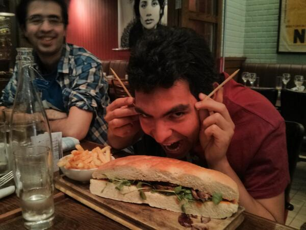

Decoupling Drupal and Consuming with Symfony2, JavaScript or Unicorns
Drupal Developer Days Dublin
June 2013
@juampy & @justafish
About the presenters

Introduction
- Meet @daniel_jacobson, ex App Development Director at http://www.npr.org
- Built a strong API which could be consumed by a long list of clients
- The National Public Radio's CMS has been working since more than 10 years ago!
http://blog.programmableweb.com/2009/10/13/cope-create-once-publish-everywhere
create once, publish everywhere

Benefits
- Easier to upgrade front and backends separately.
- Makes frontend work fun again!
- Backend focuses on just having a good content model
- Performance
Drawbacks
- Not applicable to all sort of projects
- No Views module (not necessarily a drawback :) )
- A considerable amount of time is needed for the first project
The CMS
Drupal 7 + Services* + OAuth
- https://github.com/Lullabot/copelandia
- http://copelandia.lulladev.com
For Drupal 8, just enable the REST module and tada!
* or restws or Views Datasource or a custom output
Authentication
Needed when...
- The data you are exposing is private
- You allow clients to alter data through the API

Symfony2 client
TODO
Use restws and services_entity instead of services (depending on OAuth support)
jQuery Mobile Client
https://github.com/Lullabot/copelandia/tree/master/clients/jqm
Can utilise phone features using http://cordova.apache.org/
Tips for Building APIs
- Don't expose raw Drupal field names as keys
- Don't settle for a bad data structure because it's the default views datasource/services output
- Stay consistent e.g. key naming is the same across different resources for the same field
- Try to just expose your data and not process it. This is the job of your clients
- Read this book! APIs: A Strategy Guide http://shop.oreilly.com/product/0636920021223.do
Thanks! Questions?
@juampy72
about.me/juampy
@justafish
---------
resources
http://insready.com/en/blog/android-drupal-marriage
http://www.slideshare.net/zachbrand/npr-api-create-once-publish-everywhere
http://www.lullabot.com/blog/articles/deblobbing-your-chunks-building-flexible-content-model
http://blog.programmableweb.com/2009/10/13/cope-create-once-publish-everywhere/
https://docs.google.com/presentation/d/1_R53yG0SUFhwSLxEF-G955IaeqlWDHYwhANJRSI_Q-I/edit#slide=id.g477ac8b1_2_75
http://shop.oreilly.com/product/0636920021223.do?sortby=publicationDate
http://www.lullabot.com/blog/podcasts/insert-content-here-episode-11-daniel-jacobson-nprs-cope-and-content-apis
http://linclark.github.io/rest-portland2013